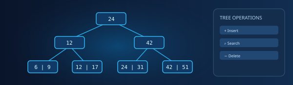
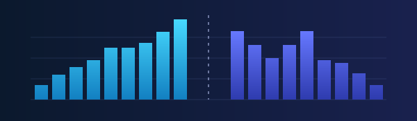
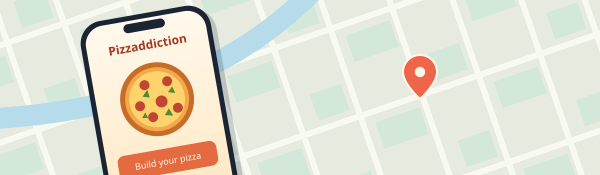

01
Visualizador de árbol B+
Explora cómo funcionan las inserciones, búsquedas y eliminaciones en un árbol B+ con animaciones paso a paso.
Disponible para nuevas oportunidades
Ingeniero de software | Desarrollador backend Java
Ingeniero en computación por la UNAM, enfocado en el desarrollo backend, las bases de datos y la creación de software eficiente y escalable.
01 Trabajo seleccionado

01
Explora cómo funcionan las inserciones, búsquedas y eliminaciones en un árbol B+ con animaciones paso a paso.

02
Ordena archivos que superan la memoria disponible con mezcla polifásica, mezcla equilibrada y radix externo.

03
Aplicación para iOS que permite encontrar pizzerías en un mapa, guardar favoritos y crear pizzas personalizadas.
02 Perfil
Soy ingeniero en computación con experiencia en desarrollo backend, bases de datos y arquitectura de software. Me interesan los algoritmos, el diseño de sistemas y las herramientas que resuelven problemas concretos.
Más sobre mí03 Herramientas y tecnologías
–
UNAM · Facultad de Ingeniería
Actualicé y mantuve el sitio web del Departamento de Telecomunicaciones, gestioné publicaciones y brindé soporte web.
–
Universidad Nacional Autónoma de México
–
Laboratorio de Desarrollo iOS de la UNAM
Conversemos sobre un proyecto de software, una colaboración o una oportunidad de trabajo.